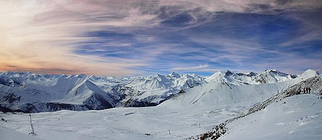

get to know georgia
გუდაური — სოფელი და სამთო-სათხილამურო კურორტი საქართველოში, ყაზბეგის მუნიციპალიტეტში, ადმინისტრაციული ერთეულის გუდაურის ცენტრი (სოფლები: განისი, გუდაური, ერეთო, სოკურიანი, ფალაგყაუ, ქუმლისციხე). გუდაური მდებარეობს ცენტრალური კავკასიონის სამხრეთ ფერდობებზე, ზღვის დონიდან 2196 მ სიმაღლეზე, სტეფანწმინდიდან 33, ხოლო თბილისიდან 120 კმ-ში“. 2014 წლის აღწერის მონაცემებით სოფელში ცხოვრობს 54 ადამიანი.

გუდაური ახალი სამთო-სათხილამურო ცენტრია ცენტრალურ კავკასიონზე. მისი კლიმატი ძალზე ხელსაყრელია აქტიური დასვენებისა და სპორტისათვის. მყარი თოვლის საფარი ექვსი თვეა წელიწადში. თოვლის საშუალო სიმაღლე სათხილამურო ფერდობებზე 190 სმ-ს აღწევს. მზის ნათების ხანგრძლივობა 2 100 სთ წელიწადში, ძლიერი ქარები იშვიათია.
დასახლება გაჩნდა XIX საუკუნის 60-იან წლებში. 1887 წელს გაიხსნა მეტეოროლიგური სადგური. კურორტის პოპულარობა ახლომდებარე საქართველოს სამხედრო გზამ განაპირობა. ამ უკანასკნელის გუდაური-მლეთის მონაკვეთი (მლეთის დაღმართი, ინჟინერი — ბ. სტატკოვსკი, 1855-1861) ერთ-ერთ ყველაზე შთამბეჭდავ სამთო გზად ითვლებოდა. კურორტის პირველი მოთხილამურეები ხელოვნურად შექმნილი საწეველებით სარგებლობდნენ და მთაზე ჩამოსასრიალებლად ავტომობილის ჯალამბარის („ლებიოდკის“) მეშვეობით ადიოდნენ.
პირველი კეთილმოწყობილი სასტუმრო გუდაურში 1988 წელს აშენდა (თავდაპირველად სასტუმრო „მარკო პოლო“, ამჟამად „გუდაური“). ამავე პერიოდში ავსტრიული კომპანია Doppelmayr-ის მიერ აშენდა საბაგირო გზა, რამაც განაპირობა კურორტის შემდგომი განვითარება. დღესდღეობით მოქმედ სამ და ოთხ ადგილიან საწეველებს მოთხილამურეები 2000 მეტრიდან 3006 მ. სიმაღლეზე (მთა კუდებზე) და 3270 მ. სიმაღლეზე (მთა საძელეზე) აჰყავს. ამჟამად სულ 5 საწეველა ფუნქციონირებს. სათხილამურო ტრასების საერთო სიგრძე 16 კმ-ს შეადგენს. სათხილამურო სეზონი დეკემბრიდან აპრილამდე გრძელდება.
